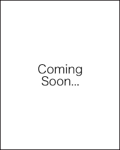

ボーディングスクール留学
私達は、米国ボーディングスクール（全寮制高校）の現役生及び卒業生の団体です。
ミッションは米国のボーディングスクールを学生生活のオプションの一つとして、日本の人に提案すること。
「ボーディングスクールに興味はあるものの誰に相談すれば良いのか分からない」
という方々の悩みを解消することによって、ボーディングスクールをより身近な存在にしていきます。
情報提供を行うだけでなく活動を通して高校生・大学生と繋がり、
米国のボーディングスクール出身生の「プラットフォーム」となれるよう尽力して参ります。
|
 Sample Sample Sample University '20 Sample High School '16 |
Sample Sample Sample University '20 Sample High School '16 |
Sample Sample Sample University '20 Sample High School '16 |
|
Sample Sample Sample University '20 Sample High School '16 |
Sample Sample Sample University '20 Sample High School '16 |
Sample Sample Sample University '20 Sample High School '16 |
私達と活動しませんか？
ご興味のある方はぜひご連絡下さい。
背景画像提供: St. Paul's School
ボーディングスクールに関する情報を
中高生やその保護者の方に発信するためのイベントです。
12校の米ボーディングスクールの
現役生及び卒業生を実際に集めて各校を紹介してもらい、
2016年に1回目、2017年に2回目のボーディングスクールフェアを開催しました。
(2017年度のイベントについての詳細はこちらを御覧ください)
ボーディングスクール生自らが自身の高校生活について話す
パネルディスカッションのイベントも実施しています。
ボーディングスクールの特徴の1つであるハークネス授業
（教師と生徒が1つの丸テーブルに座って向かい合い、
ディスカッション形式で進められていく授業の形態）の
模擬授業を2016年、2017年に実施しました
その間、保護者の方からの質問を受け付ける担当も配置しました。
Y-Sapixが発行する情報誌、Y-Sapix Journalにて連載中です。
「出身者に聞いた！ボーディングスクール特集」
というコラムを、二ヵ月に一度BSAJが担当。
過去のイベントの参加者、企画運営のヘルプ等で
BSAJとゆかりのある人物をはじめとしたボーディングスクール出身生に
様々なテーマについてアンケートを集計し、まとめたものを執筆しています。
テーマは、
「ボーディングスクール進学の経緯」や「ボーディングスクール受験」など。
BSAJ主催のイベントスピーカーや運営ボランティアとして
多くのボーディングスクール出身生に声を掛けることにより、
ネットワークの拡大化を目指しています。
具体的な学校名、受験プロセス等、
ボーディングスクールにまつわる様々な最新情報をお届けします。
参加型のイベントや説明会から、
BSAJのウェブサイトやSNSアカウントなどを通して、
より多くの生徒と保護者の方々に情報提供を行います。
ボーディングスクール出身の生徒は、
日本、米国、英国をはじめとした様々な国で活躍しています。
ボーディングスクールという共通点があるにも関わらず、
会う機会の少ない同志との繋がりを深められるよう、
「ボーディングスクール出身生データベース」の普及を目指しています。
ホームページやSNSアカウントを通してBSAJを告知し、
本団体を中心に同志と繋がれるよう、
ボーディングスクール出身生の基盤となる学生団体を目指します。
BSAJはボーディングスクール留学の経験がある
高校生や大学生を中心とした組織です。
そのため、個々の意見や活動は団体に大きな影響を与えます。
企画構成、営業、チーム育成、メディア対応などのスキルを
実践形式で身に付けながら、いずれは自分が主体となって動くという
プロセスをBSAJでは経験することが出来ます。
海外経験だけでなく、このような経験を積んだBSAJメンバーは、
国内外で通用する次世代のリーダーとなります。
ボーディングスクールに関する情報を提供するだけではなく、
実際に受験を経験した学生が受験対策や相談の窓口となります。
例えば、ボーディングスクール受験で必須となるエッセイを書く際の手助けから、
どのような学校が自分に合っているかなどのアドバイスまで、
広範囲に渡りボーディングスクール入学までのプロセスをサポートします。
ボーディングスクール生活は、学費だけではなく
生活費や長期休暇ごとの渡航費をも視野に入れなければなりません。
決してお手頃ではない留学資金が、
生徒の意欲とチャンスの妨げとならないよう、
BSAJ独自の奨学金を通して生徒を全面サポートします。